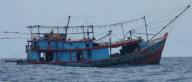
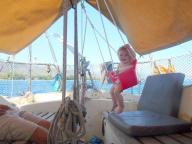
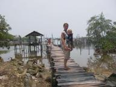

|


|
Foto's 2
» exacte locatie
 We zijn ondertussen aangekomen in Nongsa Point. De laatste haven die
we in Indonesie aandoen. We liggen nu in een luxe marina met zwembad
en aan de horizon zien we de wolkenkrabbers van Signapore.
We zijn ondertussen aangekomen in Nongsa Point. De laatste haven die
we in Indonesie aandoen. We liggen nu in een luxe marina met zwembad
en aan de horizon zien we de wolkenkrabbers van Signapore.
Verder nog even de foto's van de afgelopen tocht. De meeste zijn van
ons bezoek aan het paaldorp op Kentar. Er is ook een foto bij van een
van die visboten met hun ongelofelijk felle verlichting. Tijdens het
zeilen hebben we Siebe voor de veiligheid binnen in bad gedaan.



|
|
|
Paaldorp
» exacte locatie
Vandaag zijn we naar het dorp geweest. Kenmerkend voor dit gebied is dat de woningen op palen zowel boven het water als op het land staan. Waarom dat zo is weten we niet, want helaas sprak niemand meer Engels dan "how are you?". Het zag er in ieder geval prachtig uit. Allemaal constructies van hout, touw en een enkele spijker. Het ziet er gammel uit en dat is het ook. Alsof je in het decor van een Mad Max-achtige film loopt over een toekomst van de wereld zonder beton.
We legden onze bijboot aan bij een lange steiger, waar een stuk of vijf kinderen ons al op stond te wachten. Toen we over de wiebelende plankjes bij de kant aankwamen had er zich een hele groep verzameld. We hadden weer overtollige babyspullen meegenomen om weg te geven. Het is wel fijn om iets mee te nemen. Het geeft de expeditie een doel in plaats van dat we alleen maar een beetje rond willen koekeloeren. De oude kleertjes en speelgoedjes werden erg dankbaar in ontvangst genomen en net als in het vorige dorp direct verdeeld over alle moeders. Er was totaal geen gekibbel over wie wat kreeg. Een van de moeders nodigde ons uit in haar huis. Daar zaten we dan op de vloer in een van die paalwoningen. Er lag zeil op de grond en heel weinig kleine prulletjes, een ideale kruipomgeving voor Siebe dus. We waren uiteraard niet alleen. Een stuk of twintig toeschouwers vergezelden ons. De meisjes vonden het erg leuk om met Siebe te spelen. Wij kregen een glaasje fris dat smaakte naar hele zoete bubblegum en een paar koekjes waarvan een soort naar oliebollen smaakte. Ik heb een van de mannen daar gevraagd of ik vis kon kopen. Ze hadden geen vis, maar wel cumi cumi (sjoemie sjoemie). Dat is inktvis. Hij stuurde een jongen op pad en die kwam terug met een zakje met gedroogde inktvisjes van ongeveer 1 mm hoog. Interessant. Ik had gedacht inktvisringen te maken, maar hier is niet echt een ring van te snijden. De kinderen vonden onze digitale camera helemaal geweldig en wilden steeds op de foto en dan het resultaat bekijken. We hebben hun postadres gevraagd zodat we een paar afdrukken kunnen opsturen. Het kostte hen nogal wat moeite om hun eigen adres te achterhalen. Veel post krijgen ze waarschijnlijk niet. Uiteindelijk kwam er iemand aan met een oude envelop die hij ooit had ontvangen en konden we dat adres overnemen.
Terug op de boot heb ik me gewaagd aan de cumi cumi. Droog, taai en het smaakt naar vis. Een tweede hap nodigde niet echt uit. Later die dag kwam er weer een boot met daarin een aantal kinderen en een moeder langs. Deze mensen hadden we nog niet gezien. Blijkbaar was het verhaal dat we aan ruilhandel doen rondgegaan en wilden ze ook wel ruilen. We kregen een zak met een paar limoenen, wat chips-achtige snacks en een flinke stapel cumi cumi. Ze denken nu zeker dat we daar erg van houden. Toen barstten de vragen los. "Mister, t-shirt?", "Mister, lipstick?". Mister, schriften, pennen, sigaretten, babykleertjes, diesel, water en een heleboel andere dingen waar zij alleen het Indonesische woord van kenden en wij niets van snapten. Ze kunnen hier echt alles gebruiken en zijn heel dankbaar voor de voor ons meest onbenullige dingen. We hebben ze wat spulletjes gegeven, maar je komt er al gauw achter dat er geen eind aan komt. Na een twintig minuten dralen gingen ze weer terug naar het dorp. Heel langzaam roeide een meisje alleen een boot met zes personen meer dan een kilometer tegen de wind in. Ze maakten me ook nog duidelijk dat ik die cumi cumi in water moest doen. Er ligt er nu dus eentje te weken in een bakje, maar hij is nog niet tot leven gekomen.
Foto's komen binnenkort als weer snel internet hebben.
|
|
|

Kentar
» exacte locatie
We zijn vandaag de evenaar weer gepasseerd en daarmee terug op het noordelijk halfrond. Het geeft ons het gevoel weer wat dichter bij huis te zijn gekomen. Ook hebben we vandaag onze negendaagse zeiltocht vanaf Bali afgerond. Het was niet een hele snelle tocht, maar wel erg comfortabel. Alle dagen lang hebben we om beurten met Siebe gespeeld. Aan aandacht voor hem geen gebrek. We weten niet of het toevallig is, maar hij heeft in deze periode weer een aantal nieuwe dingen geleerd. Het meest indrukwekkende vinden we dat hij de knuffel-kiwi (vogel uit Nieuw Zeeland) gaat pakken als we vragen "waar is de kiwi?". Het eerste echte bewijs dat hij daadwerkelijk iets van ons begrijpt! Ook als de kiwi in een doos zit gaat hij er echt naar op zoek tot hij gevonden is. Hij noemt die kiwi trouwens "ki".
Het eilandje waar we nu liggen heet Kentar. Ziet er niet gek uit met veel groene begroeiing en palmbomen. Naast ons ligt een soort visvlot met daarop een klein rieten huisje. Ze vissen hier echt op de meest originele manieren! Vlak voor zonsondergang kwam er een kano met een man en een kind langszij. Ze waren op weg naar het visvlot om de nacht te gaan vissen en kwamen even een kijkje nemen. Het is alleen zo jammer dat wij geen Indonesisch spreken en zij geen Engels. Het zou zo leuk zijn om veel meer te weten te komen over hoe de mensen hier leven, maar er zijn maar heel weinig mensen die Engels spreken. Morgen gaan we het dorp hier verkennen, misschien dat daar iemand Engels spreekt.
Nadat het anker gevallen was zijn Ilse en ik meteen de zee ingesprongen. Het klimaat is hier zo heet en vochtig dat je wel de hele dag in het water kan liggen. Daarna hebben we Siebe in zijn blootje in de kuip gezet met de waterslang. Zo'n straal water vindt hij heel erg interessant. Toen zijn haartjes gewassen en in bad gedaan. Alle drie weer schoon. Ilse en ik hebben een biertje gedronken en Siebe knabbelde op een soepstengel. Een erg ontspannen middag.
|
|
|
Vreemde lichten
» exacte locatie
Als je 's nachts varend land nadert is het eerste dat je ervan ziet meestal de lichtkoepel van een stad. Eergisteren toen het donker werd leek het alsof er voor ons vijftig kleine stadjes lagen. Vijftig lichtkoepeltjes aan de horizon. Alleen was er volgens de kaart helemaal geen land in die richting. Na een tijdje veranderde een van die lichtkoepeltjes in een heel fel licht. Als een flitser van een fotocamera die continu aan staat. Nadat we verder het veld in waren gevaren waren we omringd door felle lichten en koepeltjes. Het bleken visboten te zijn die met het felle licht waarschijnlijk de vissen lokken. Het moet daar wel een erg goede visstek zijn geweest, want waarom zouden ze anders allemaal in dezelfde 20 bij 20 km gaan vissen? Later in de nacht passeerden een van de boten ons dichtbij en konden we zien dat ze van voor tot achter boven de boot een lijn hebben lopen met daaraan een stuk of twintig van die extreem felle lantaarns. Vreemd genoeg gingen die lantaarns ineens uit toen ze dwarsscheeps van ons waren. Alleen een paar kleine lampjes waren nog aan. Toen legden ze de boot stil en deden ze ook die laatste lampjes uit. In het licht van de sterren kon ik hun totaal onverlichte boot nog net zien dobberen. Ik begon me toch een beetje af te vragen wat nu de bedoeling was. We gaan nu toch geen gekke piraten-dingen doen? En toen floep, alle lampen sprongen weer aan en de boot voer verder. Waarschijnlijk waren de vissers nieuwsgierig naar wat voor ongebruikelijk schip daar voer en deden ze al het licht uit om henzelf niet te verblinden. Over piraterij raakt niemand meer uitgepraat tegenwoordig. Het is moeilijk om je daar niet door te laten beinvloeden en helaas bekijken ook wij daardoor iedere boot die je nadert of ook maar iets afwijkends doet met argwaan.
|
|
|
Kookworkshop
» exacte locatie
Na ons uitstapje naar Ubud zijn we nog een week in Lovina Beach in het noorden van Bali gebleven. We vinden Lovina erg leuk. Elke dag eten we warm op de kant. Zo goedkoop, daar gaan we niet zelf voor koken ;-). Elke keer kiezen we weer wat anders van de menukaart. De meeste dingen kennen we wel uit de Nederlandse 'Chinese' keuken zoals nasi goreng, babi pangang en sate ayam. Ik wilde daar wel meer van weten en besluit om toch wel een keer zelf te koken. Niet op de boot maar een kookworkshop op de kant. Ik heb geluk, ik ben de enige en krijg priveles. Van te voren mocht ik vijf gerechten kiezen die ik wilde leren maken. De kokkin Sri spreekt goed Engels en ze heeft een hulpje die helpt met snijden en in de pan roeren. We maken onder andere een curry met 14 soorten kruiden en gado gado, gekookte groente met satesaus en ei. Het basisidee van de verschillende sausen is steeds hetzelfde. Alle kruiden klein snijden en met de vijzel stampen tot het een saus wordt. Erg leuk om te doen en mooiste was dat Joost mocht helpen met alles op eten. Sri vermaakt Siebe dus we eten een keer tegelijk. Joost vond het de beste gerechten die hij tot dan toe had gehad. Ik heb alles goed opgeschreven dus hopelijk lukt het om het ook op de boot te maken. Alle kruiden zijn gekocht maar van uitgebreid koken komt nu niet veel, want we zitten sinds drie dagen weer op zee. We zijn op weg naar Singapore maar willen nog een paar stops in Indonesie maken. Nog 600 mijl te gaan...
|
|
|
Balitourtje
» exacte locatie
Van Noorderzon, de Nederlandse boot die met ons in Brisbane lag,
krijgen we het telefoonnummer van Ponidi. Ponidi rijdt je een hele dag
rond in zijn auto voor 25 euro. Dat vinden we niet duur en ook handig
met Siebe omdat je dan kunt stoppen wanneer je wil. Zo komt de
maxicosi toch nog van pas. In Indonesie doen ze niet aan babystoeltjes
en er zijn geen gordels achterin maar Joost weet 'm goed vast te
knopen. De natuur op Bali maakt erg veel indruk op ons, zo anders dan
wat we tot nu toe gezien hebben. Dat komt vooral door de prachtige
rijstvelden die je overal ziet. Schuin op de helling als terrassen
zodat ze met een slim systeem alles onder water kunnen zetten.Tempels
hebben ze ook heel veel op Bali. We hebben een drijvende tempel in een
bergmeer gezien. Het aantal etages van het dak hangt af van de soort
tempel. Omdat deze drijft krijgt hij er wel elf. De eerste dag
eindigen we 's middags in Ubud in een hotel, vlakbij het apenbos.
Vanaf ons balkon zien we er af en toe een paar langskomen.
Ubud is een cultureel stadje waar we een dag blijven. Er zijn elke
avond dansvoorstellingen en heel veel winkels die kunst verkopen.
Vooral de abstracte kunst ziet er erg gelikt uit en voor veertig euro
koop je een enorm doek. Er is vanalles te zien en tussendoor smullen
we in een van de vele restaurantjes hier. Met Siebe is dat niet altijd
handig omdat hij wil rondkruipen. Gelukkig hebben ze ook een paar
tentjes met een lounge. Dan zit je aan een lage tafel met veel
kussens. Dat vinden we wel handig voor Siebe. Hij eet wat kale rijst
en gekookte wortel mee. De serveersters zijn dol op baby's en als we
geluk hebben komen gaan ze even een rondje met Siebe lopen zodat we
tegelijk kunnen eten. Op de stoep is het goed oppassen waar je loopt
want voor deuren zie je kleine bakjes gemaakt van palmblad met daarin
bloemblaadjes, gekookte rijst, een koekje en wierook staan. Dat zijn
offers en worden elke dag ververst.
De volgende dag gaan we weer terug. Ponidi komt ons ophalen en we
rijden via een andere weg terug naar Lovina Beach. De weg slingert de
berg op en bovenop is een restaurant met een prachtuitzicht op een
vulkaan. Daar lunchen we maar Siebe vindt het even niet zo leuk. Iets
te veel eettentjes voor hem geweest de afgelopen dagen waar hij niet
naar hartelust kon rondbewegen. We hebben genoten van al het moois
maar zijn toch blij weer op de boot te zijn. Dat is toch een stuk
makkelijker met Siebe ;-).


|
|
|
Foto's
» exacte locatie
Na een nacht serieus zeilen met een windkracht zeven schuin van voren
zijn we moe maar voldaan aangekomen op Bali. Dit gaat voor de komende
twee of drie weken onze ligplaats worden. Eventjes niet steeds
verhuizen. En onze eerste indruk is dat dit helemaal geen slechte plek
is om te liggen. Goede ankergrond, boatboys die de was doen, goedkope
maar lekkere restaurantjes en er lopen hier meer toeristen waardoor we
gelukkig geen bezienswaardigheid meer zijn.
Nog even kort commentaar op de foto's die eigenlijk bij de voorgaande
verhaaltjes hoorden maar die niet meegestuurd konden worden door de
langzame internetverbinding: een varaan die enthousiast hapt naar een
vissekop, de kale bergen bij Komodo, Siebe die de boot als speeltuin
begint te zien, Siebe die bij mij staat terwijl ik aan het zenden ben,
drie jongetjes in een holle boomstam die snoepjes van ons krijgen,
Ilse die belaagt wordt, de winkel waar we bananen hebben gekocht en
onze gastvrouw die het eten opschept.
|
|
|
Gelegenheidsrestaurant
» exacte locatie
Het dorpje Kananga op Sumbawa is een dorp dat blijkbaar weinig toeristen ziet. We wandelen door de straatjes en zijn echt een bezienswaardigheid. Achter de ramen van huizen verschijnen overal nieuwsgierige hoofden, hele groepen mensen komen op ons af gelopen met de kinderen rennend voorop. Overal klinkt het "hello mister!". Moeders met babies zijn bijzonder geinteresseerd in Siebe. Het is jammer dat we nauwelijks Indonesisch kennen en verder dan het uitwisselen van de leeftijd in maanden van onze babies en het beantwoorden van de vraag jongen of meisje komen we niet. Tussen al die mensen hebben we niemand kunnen vinden die Engels spreekt. Iedereen is erg vriendelijk en lacht naar ons, maar we voelen ons een beetje hulpeloos. Onze doelen hier zijn een restaurant en een markt of winkel met groente en fruit. Het woord voor restaurant kennen we, maar aan de reacties te zien is er geen. Voor groente en fruit kunnen we eigenlijk alleen op het woord pisang (banaan) komen. We worden naar een heel klein winkeltje gewezen met blikjes eten en trossen bananen die aan het dak hangen. We kopen er een tros. Op de terugweg komt er weer een hele groep mensen op ons af. Een vrouw gebaart naar een huisje waar we in moeten gaan om te eten. We gaan naar binnen, gevolgd door een groep van zo'n vijftien kijkers. De bewoonster van het huis begint wat water uit een emmer te scheppen en aan de kook te brengen in een pannetje op een klein gaspitje op de grond. Het lijkt erop dat haar huis speciaal voor deze gelegenheid een restaurantje is geworden. Ze is ongeveer een kwartier bezig met koken. Die vijftien kijkers blijven ons al die tijd nog steeds vol interesse observeren. Dan gebaart ze dat we op de grond kunnen gaan zitten en krijgen we allebei een kommetje met mie en gehaktballetjes. Het smaakt heel goed. Terwijl we het opeten zijn er nog steeds dertig oogjes op ons gericht. Onze gastvrouw wandelt ondertussen een beetje met Siebe heen en weer. Als we het op hebben halen we een zak afgedankte babyspullen tevoorschijn. Daar lijken ze heel blij mee te zijn en binnen een minuut is alles verdeeld over de aanwezigen zonder enige discussie. We vragen hoeveel de rekening is. Dua puluh, 20000 Rupiah oftewel anderhalve euro. We zeggen gedag en gaan terug naar onze boot. En het dorp gaat weer verder met waar het mee bezig was.
|
|
|
Snorkelen
» exacte locatie
De omgeving van Komodo waar we nu zijn is echt een heel mooi zeilgebied. De omgeving ziet er vooral geel uit met droge bergen, een enkele boom en wat mos. We hebben er gisteren de hele middag van genoten toen we naar een volgende plek zeilden. Onderwater is het ook erg mooi. Er zijn hier heel veel goede duik en snorkelplekken. Gisteren hebben we gesnorkeld bij een zogenaamde 'bommie'. Dat is een hoge onderwaterberg in diep water. Vaak is daar veel koraal en zijn er mooie vissen te vinden. Heeft de naam 'bommie' uitleg nodig? Als je de bommie niet ziet terwijl je aan het varen bent dan is het BOEM! Deze snorkelplek was een van de beste van de hele reis tot nu toe. In de Pacific was het koraal allemaal vrij saai, wit en grijs, van kleur, maar hier vonden we felgeel, felgroen, felrood, felblauw, van alles! Het snorkelen doen we tegenwoordig met ons drieen. Ilse en ik gaan om de beurt snorkelen. De ander houdt een paraplu tegen de zon boven Siebe. Hij vermaakt zich prima in de bijboot. Vooral het motortje is populair. Als hij uitgespeeld is valt hij soms in slaap. Waarschijnlijk door het gedobber in de golven.
|
|
|
Komodovaranen
» exacte locatie
Na drie nachten zeilen komen we aan op het eiland Rinca. We zijn erg blij dat we zulke goede wind hadden hierheen want Indonesie is berucht om de windstiltes en dus veel motoren. We komen 's ochtends aan en het is lastig een goede ankerplek te vinden. Het is heel diep, van honderd meter loopt het vrij snel op naar dertig meter en dan ben je al vlak bij de kant. Wij hebben zestig meter ankerketting wat betekent dat we in maximaal twintig meter ons anker kunnen uitgooien. Het anker houdt het best als je 3 tot 5 keer de diepte van het water aan ketting uitgooit. We vinden een mooi plekje op 26 meter diepte. Onze zestig meter ketting is niet lang genoeg dus besluiten we er nog vijftien meter lijn aan vast te maken. Na een paar uur uitrusten van onze tocht kijken we buiten en zien we dat we zijn gaan krabben. We liggen tussen vrij hoge bergen met valwinden en slingeren daardoor veel achter ons anker. Hmmm... Geen zin om te verhuizen maar zo kunnen we natuurlijk niet blijven liggen. Joost heeft erg veel moeite om de lijn en de ketting op te halen. Bij de volgende boot willen we wel een elektrische ankerlier ;-). We besluiten heel dicht bij de kant te ankeren en daar is het nog twaalf meter diep. Toch maar doen. En daar liggen we dan met uitzicht op het strandje waar we niet aan wal durven. Want er lopen komodovaranen. Reuzehagedissen van ruim drie meter lang. En ze zien er niet bepaald vriendelijk uit. Een toeristenboot heeft een enorme vissenkop aan een tak opgehangen waar ze al springend een hap van nemen. Erg indrukwekkende dieren en die lopen hier zomaar in het wild rond! Later zien we ook apen op het strand rondlopen. Geen idee wat Siebe er van vindt. Hij kijkt maar vindt het water ook erg interessant. Zijn nieuwste truc is zwaaien naar iedereen maar naar de komodovaranen zwaait hij niet.
|
|
|
Corruptie in Kupang
» exacte locatie
Na onze illegale stop in Nembrala zijn we naar Kupang gevaren om officieel in te klaren. Kupang staat bekend als de meest corrupte stad in Indonesie en je moet bereid zijn om links en rechts onduidelijke bedragen zonder bon te betalen. Men noemt dat "cigarette money" en op het moment is dat per instantie zo'n $10-$20. Er zijn vier instanties die bezocht moeten worden: quarantaine, immigratie, douane en havenmeester. De kantoren liggen ook nog eens een eind uit de stad en als de juiste persoon niet aanwezig is, dan wordt het een eindeloos durend project. Wie hier geen zin in heeft kan een zogenaamde agent inschakelen die al het werk en smeergeld regelt voor de vaste prijs van $250. Er is er maar eentje in Kupang en hij heet Napa. Wij vinden dat een behoorlijk bedrag dus ik ga proberen het zelfstandig te regelen.
Als eerste de quarantaine. Na een dag wachten ontmoet ik officier Abdullah in een cafe bij de boot. Hij vult het papierwerk razendsnel in. Dat is dan $20 zegt hij. Ik zeg dat ik niets wil betalen. Hij werpt tegen dat hij het mij voor dat geld makkelijk maakt en mijn boot niet gaat doorzoeken. Nou goed dan, we sluiten de deal op $10. Als extra service zal hij me wel even op zijn brommer naar immigratie brengen. Dat klinkt goed, dus ik stap achterop zijn brommer (uiteraard zonder helm, men zit hier zelfs met baby's los onder de arm op een brommer...). Alleen in plaats van naar immigratie te rijden brengt hij me naar het huis van Napa, de agent die $250 rekent. Wat is dit voor land? Ik zeg dat ik geen agent wil. Dat is prima en zonder te hoeven betalen brengt Napa me deze keer echt naar immigratie. Immigratie is snel klaar met onze paspoorten na het smeergeld te hebben afgedongen van $20 naar $10.
Vervolgens de douane. Ik ga deze keer met een minibusje dat vol zit met scholieren. Ze vinden het allemaal heel grappig dat ik geen woord Indonesisch spreek en beginnen aan me te plukken, foto's te maken en proberen me zoveel mogelijk te laten betalen voor de rit. Hmpf. Bij de douane kom ik terecht in het kantoor van douanebeambte Remi. Remi legt me uit dat ik een probleem heb. Ik moet een borgsom betalen voor de boot en krijg die terug bij het verlaten van het land. Hij laat me een enorm dik wetboek lezen (in Indonesisch) waar het verhaal over de borgsom beschreven staat. Voor onze boot komt dit op iets meer dan $10000. Ik zeg hem dat ik dat geld niet heb. Een half uur lang blijven we aan elkaar op een hele rustige manier onze situaties uitleggen. Uiteindelijk zegt hij dat de enige andere manier is om een agent te nemen. Napa dus. Hij zou dan garant staan voor het geld. Ik leg Remi uit dat ik geen $250 wil uitgeven voor dit doel, wetende dat andere havens in Indonesie deze achterhaalde wet helemaal niet toepassen. Bovendien is het duidelijk dat Remi een groot stuk van die $250 onder de tafel van Napa ontvangt. Dan stelt Remi voor om Napa te bellen en ook op kantoor te laten komen. Hij zal Napa dan wel zeggen dat hij een betere prijs met mij overeen moet komen. Ik krijg zijn telefoonnummer voor het geval ik er niet uitkom met Napa. Napa komt op kantoor, ze babbelen wat in het Indonesisch en dan is onze bijeenkomst afgelopen. Buiten vraagt Napa me hoeveel ik dan wil betalen. Ik zeg $50. Hij zal er over "denken" (vragen aan Remi of hij het daarvoor doet) en me daarna opbellen. De rest van de dag zal ik niets meer van hem horen.
Terug in de stad heeft Ilse contact gelegd met een Australier die hier aardig bekend is en hij geeft haar het nummer van ene Robin die goede contacten in de Indonesische regering heeft. Ik bel hem op en hij blijkt de goede persoon te zijn. Hij vraagt me om namen en telefoonnummers en zegt er direct mee aan de slag te gaan. De volgende ochtend om acht uur komt ineens de douane langs op onze boot. Ze zijn in drie minuten uitgekeken zonder ook maar iets te vragen, dat is positief. Napa is er ook en hij neemt mijn papieren mee om alles in orde te maken. Nog steeds geen prijs genoemd ("sssshh, ssshh, niet hier" . Robin belt me later en zegt dat alles in orde komt als ik Napa $100 betaal. Aan het eind van de middag belt Napa dat alles klaar is. Ik ga naar hem toe en hij is tevreden met de $100. Ik eigenlijk niet, maar na vier dagen te hebben geprobeerd in te klaren ben ik blij dat we er eindelijk vanaf zijn. Terug naar de boot, anker omhoog en vlak na zonsondergang varen we weg van Kupang. . Robin belt me later en zegt dat alles in orde komt als ik Napa $100 betaal. Aan het eind van de middag belt Napa dat alles klaar is. Ik ga naar hem toe en hij is tevreden met de $100. Ik eigenlijk niet, maar na vier dagen te hebben geprobeerd in te klaren ben ik blij dat we er eindelijk vanaf zijn. Terug naar de boot, anker omhoog en vlak na zonsondergang varen we weg van Kupang.
|
|
|
Nembrala
» exacte locatie
Het was eigenlijk de bedoeling vanaf Ashmore Reef noord-noordoost te varen naar Kupang op Oost Timor om in te klaren. Alleen eenmaal op zee werd al gauw duidelijk dat de windrichting dit niet toe ging laten. We hadden geen zin in gedoe en besloten daarom naar een makkelijker te bereiken bestemming te gaan. Dat was het dorpje Nembrela op het eiland Roti waar we vanmorgen vroeg aankwamen. We zetten meteen de bijboot in elkaar en gaan op verkenning uit. Het is direct duidelijk dat we hier in een heel ander soort land zijn. Er liggen allerlei vreemdsoortige boten in de baai welke wij nog niet eerder ergens hebben gezien. Op de kant komt er een groepje jongens op ons af en stelt vragen in het Indonesisch. We maken er weinig van behalve de vraag hoeveel maanden oud Siebe is.
Het dorp zelf ziet er echt uit zoals je van een authentiek dorp verwacht. Allerlei verschillende soorten huizen losjes geordend langs een hoofdweg. Sommige zijn van steen, andere van riet. De mensen in het dorp zijn erg vriendelijk en vrolijk. Met Siebe in de buikdrager is het niet moeilijk om contact te maken. Ilse heeft een soort van gesprek met een andere jonge moeder. Haar baby is acht maanden oud. De buikdrager vindt ze een bijzonder interessant ding, dat kennen ze hier niet. Verderop staat een kraampje dat diesel (solar) verkoopt in oude flessen. Dat kennen wij dan weer niet.
Voor de kust van dit dorp zijn goede surfgolven en er zijn daardoor wat surfers in het dorp te vinden. We raken aan de praat met een Zwitserse surfer, Gilbert, die in het lokale pension logeert. Hij is al vier jaar in Indonesie en beheerst de taal. Hij legt het een en ander uit en helpt bij de vragen die we hebben. De baas van het pension brengt ons koffie met donuts. We willen dat betalen, maar hij zegt dat het gratis is. We mogen ook blijven lunchen en helpen de versgevangen makreel op te eten. Al het water dat men hier drinkt wordt eerst gekookt op een houtvuur. Het water bij de lunch smaakt daarom naar rook.
We hebben ondertussen vijf plastic zakken verzameld met daarin afval van twee weken inclusief heel veel vieze luiers van Siebe. Daar willen we graag vanaf. Alleen blijkt er niet zoiets te zijn als een afvalcontainer of enige vorm van infrastructuur om afval af te voeren. Men adviseert om een gat te graven en het daar in te stoppen. Daar willen we toch echt niet aan en besluiten de troep dan nog maar even met ons mee te sleuren. Als we weer terug bij de bijboot zijn zien we ineens onze vrienden van Cheers een afvalverbrandingsvuur op het strand aansteken met benzine uit de buitenboordmotor. Ze hadden het gevraagd en het was allemaal prima. Verbranden lijkt ons een betere optie dan het plastic zo onder de grond stoppen en ik begin onze zakken ook in het vuur te gooien na te hebben gecontroleerd of er geen afgesloten flessen bij zitten die uit elkaar kunnen knallen. De kinderen van het dorp zijn zeer geinteresseerd in het afval dat ik sorteer. Ze halen er twee plastic bierflessen, een oude speen van Siebe en een niet-werkende zuignap van een stuk speelgoed uit voor een tweede leven.
Dat was onze eerste dag in Indonesie. We hebben ons goed vermaakt. Dit belooft een land met verrassingen te gaan worden voor ons.

|
|
|

|

|
|
|